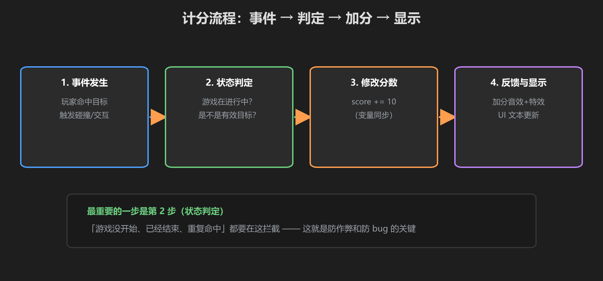
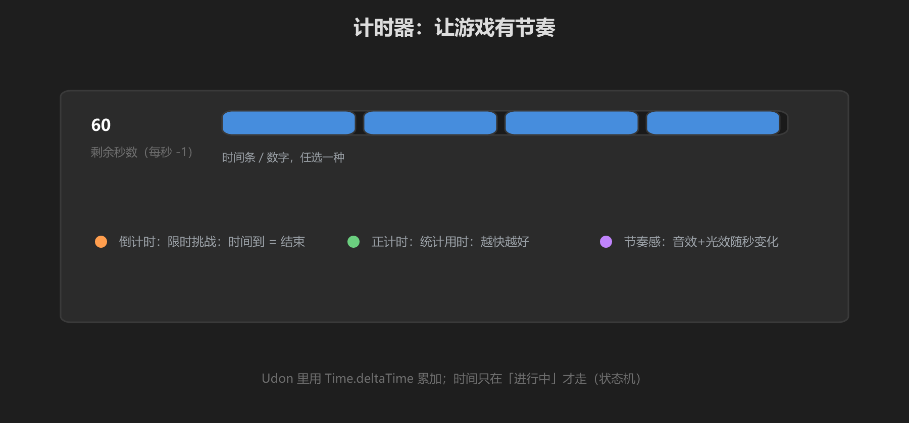

第 3 篇：计分与计时 — 让努力被看见
分数是玩家努力的最直接反馈，时间是制造紧张感的利器。这一篇把这两样做扎实。
1. 计分流程

图：事件发生 → 状态判定 → 修改分数 → 反馈与显示
public void OnHit() // 碰撞或按钮触发
{
if (!manager.IsPlaying()) return; // ① 状态判定：没在玩，不算分！
if (alreadyScored) return; // ② 防重复：一个人只能得一次
score += 10; // ③ 修改分数
OnScoreChanged(); // ④ 反馈 + 更新 UI（+ 网络同步）
}最重要的不是加分，是第 ①② 步的"拦截"。"游戏没开始、已经结束、重复命中"都要在这里挡住 —— 这就是防作弊和防 bug 的关键。
2. 计时器

图：倒计时 / 正计时 / 节奏感，三种常见用法
public float timeLeft = 60f; // 倒计时 60 秒
private void Update()
{
if (manager.IsPlaying()) // 只在"进行中"计时！
{
timeLeft -= Time.deltaTime;
if (timeLeft <= 0f)
{
manager.EndGame(); // 时间到 → 结束
}
}
}- 倒计时：限时挑战，时间到 = 结束，制造紧张感
- 正计时：统计用时，越快越好
- 节奏感：秒针音效、整点光效，让时间"有存在感"
Udon 里没有 Update 时的Time.deltaTime需要放在循环里；也可以用SendCustomEventDelayedSeconds做每秒触发。重点是：时间只在 Playing 状态才走。
3. 把分数显示出来
- Canvas 里加一个
Text（TextMeshPro），命名ScoreText - 写一个
ScoreboardComponent，在 OnScoreChanged 时更新文本 - 计分组件通过信号把新分数发给计分板（你的项目架构：Component → Signal → Component）
UI 刷新要和计分分离：ScoreComponent 只管"分数是多少"，ScoreboardComponent 只管"显示出来"。分开写，各自好测。
学前检查清单
- 写了带状态判定和防重复的计分逻辑
- 写了一个只在 Playing 时运行的计时器
- 把分数显示到了 UI 上